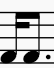

个人乐理自学笔记
本节内容参考自三分钟音乐社 《零基础学音乐·自学乐理第二季》 101-121节
五线谱
谱号
五线谱有五条线，由下至上分别可称为一线、二线、三线、四线、五线。五条线形成四个空间由下至上可称为一间、二间、三间、四间。此外五线谱可以加线，向上加线可称为上加一线、上加二线、上加三线等，形成上加一间、上加二间、上加三间等；向下加线可称为下加一线、下加二线、下加三线等，形成下加一间、下加二间、下加三间等。
高音谱号
高音谱号符号为𝄞，由字母G的花体演化而来。该谱号记在五线谱的第二线上（手写时从第二线开始画），表示五线谱的第二线对应音名\(g^1\)（或G4），对应其他音名如下图所示。 上图中音名全部对应钢琴中的白键，可以在音符前加升降号来对应钢琴中的黑键。
低音谱号
低音谱号符号为𝄢，由字母F的花体演化而来。该谱号记在五线谱的第四线上（手写时从第四线开始画），表示五线谱的第四线对应音名\(f\)（或F3），对应其他音名如下图所示。
中音谱号与次中音谱号
中音谱号与次中音谱号的符号为𝄡，由字母C的花体演化而来。中音谱号记在五线谱的第三线上，表示五线谱的第三线对应音名\(c^1\)（或C4）;次中音谱号记在五线谱的第四线上，表示五线谱的第四线对应音名\(c^1\)（或C4）。
八度记号与十五度记号
八度记号用于表示某个区间的音符需要提高一个八度（𝄶，记在上方）或降低一个八度（𝄷，记在下方）演奏。
十五度记号用于表示某个区间的音符需要提高两个八度（𝄸，记在上方）或降低两个八度（𝄹，记在下方）演奏。
当然也有二十二度记号，即提高或降低三个八度。
拍号
和简谱类似，不再赘述。
补充：44拍亦可记为“𝄴”，22拍亦可记为“𝄵”。
音符
| 名称 | 简谱记法 | 五线谱记法 | 时长 |
|---|---|---|---|
| 倍全音符 | \(1-------\) | 𝅜 | 八拍（两节） |
| 全音符 | \(1---\) | 𝅝 | 四拍（一节） |
| 二分音符 | \(1-\) | 𝅗𝅥 | 二拍 |
| 四分音符 | \(1\) | 𝅘𝅥 | 一拍 |
| 八分音符 |  |
𝅘𝅥𝅮 | 半拍 |
| 十六分音符 |  |
𝅘𝅥𝅯 | 四分之一拍 |
| 三十二分音符 |  |
𝅘𝅥𝅰 | 八分之一拍 |
| 六十四分音符 | 𝅘𝅥𝅱 | 十六分之一拍 |
音符中的实心或空心圈称为“符头”，符头的位置决定了音高。
竖线可称为“符干”，除全音符、倍全音符外的音符都有符干。
八分音符及时值更短的音符有“符尾”，音符符尾的条数与其简谱音符下横线数相等。
五线谱的附点记在音符的符头右侧，表示的意义与简谱相同，即延长原音符时长一半。
两个附点表示在第一个附点延长一半的基础上，第二个附点再延长原音符时长一半的一半（1.75倍）。三个附点的时长为原音符的1.875倍，以此类推。
| 名称 | 简谱记法 | 五线谱记法 |
|---|---|---|
| 全休止符 | \(0000\) | |
| 二分休止符 | \(00\) |  |
| 四分休止符 | \(0\) | 𝄽 |
| 八分休止符 | 𝄾 | |
| 十六分休止符 | 𝄿 | |
| 三十二分休止符 | 𝅀 |
全休止符贴第四线，二分休止符贴第三线。
八分休止符及时值更短的休止符符尾的条数与其简谱下横线数相等。
全休止符即可表示休止四拍，也可表示休止一整个小节（此时整个小节只记一个全休止符）。
休止符加附点同样是延长时值，规则与音符附点相同。
连线、延音线规则与简谱相同。
速度
抽象的速度记法与简谱相同。
具体的速度，可以记为“𝅘𝅥=120”的形式，意为每分钟奏120个四分音符时对应的速度，若乐谱以四分音符为一拍（拍号分母为4），即可进一步解释为“每分钟120拍”。
同理，“𝅗𝅥=60”意为每分钟奏60个二分音符时对应的速度，若乐谱以二分音符为一拍（拍号分母为2），即可进一步解释为“每分钟60拍”。
对于拍号分子为3或6的乐谱，如83拍、86拍。会以3拍为一组计算速度，如对于83拍乐谱，“𝅘𝅥.=60”意为每分钟奏60个附点四分音符（三拍时长）时对应的速度，相当于每分钟180拍，即“𝅘𝅥𝅮=180”。
节奏型
常见的节奏型与简谱一致。
| 名称 | 简谱记法/打拍子方法 | 五线谱记法 |
|---|---|---|
| 二八 | ||
| 四十六 |  |
|
| 前八后十六 | ||
| 前十六后八 |  |
|
| 前附点 |  |
|
| 后附点 |  | |
| 大附点 | ||
| 小切分 | ||
| 大切分 | ||
| 三连音 |  |
调号
五线谱的调号用升降号在谱号后表示，使用哪些升降号取决于调式音阶中哪些音带升降号。
如D大调的调号可表示为，可以观察到其高音谱号第三间(#C5)、第五线(#F5)与低音谱号第二间(#C4)、第四线(#F4)上有升号，有升号的位置对应着音名C与F。而D大调音阶为D、E、#F、G、A、B、#C、D，其中音名C与F上有升号。
五线谱的调号可以理解为适用于整个乐谱的“变音记号”，用于提示相应的音名需要升音或降音演奏。如D大调的调号表示乐谱中（更换调号前）所有的C或F都要演奏为#C或#F（所有组的C与F，不局限于C4、F4、C5、F5），这样在乐谱中的C与F音符不用再加“#”号来提示。
五线谱一共有十五种调号，如上图所示。其中C大调不含任何升降号，其余调号含有1到7个升号或降号。
观察升号最多的大调，升C大调有7个升号，从左到右依次是“#F、#C、#G、#D、#A、#E、#B”。去掉最后一个升号“#B”，得到“#F、#C、#G、#D、#A、#E”，正好是有6个升号的升F大调，再去掉“#E”，则可得到有5个升号的B大调。以此类推，只留下第一个“#F”，这就是有1个升号的G大调。
降号最多的大调为降C大调，从左到右依次是“♭B、♭E、♭A、♭D、♭G、♭C、♭F”，也可按照这个规则推出其他带降号的大调。
口诀：FCGDAEB，BEADGCF；4152637，7362514。
五线谱的调号可以通过一定规则去识别：
带有升号的大调，最后一个升号是#X音时，此调为(#X+半音)大调。
如4个升号的大调，其最后一个升号是#D，#D提高半音是E，故该调为E大调。
带有降号的大调，倒数第二个降号是♭X音时，此调为♭X大调
如5个降号的大调，其倒数第二个降号时♭D，故该调为♭D大调。
记号
五线谱的记号大多数与简谱记号一致。
力度记号、速度记号、反复记号——与简谱完全一致；
省略记号——将单音震音记号画在音符符干位置，双音震音记号画在音符中央，其余省略记号与简谱完全一致；
演奏记号——顿音记号在五线谱中被分为“跳音”与“顿音”两种，其中跳音符号为“·”，标在音符上方或下方，表示演奏原音符二分之一时值，顿音符号为“▼”，标在音符上方或下方，表示演奏原音符四分之一时值。几个连续的跳音记号上画连线时，如“”。意为“连续的跳音”，理论上演奏时长为原音符的四分之三时长。
倚音记号在五线谱中的记法如图，原音与倚音用连线相连，倚音上画有一根短斜线。
其余演奏记号只是记法稍有区别，在意义上与简谱完全一致。
临时变音记号规则与简谱一致。